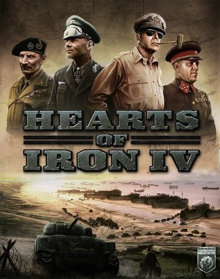
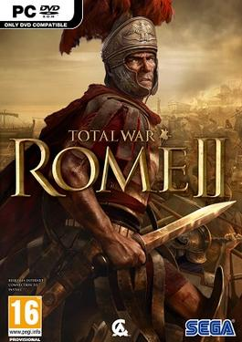
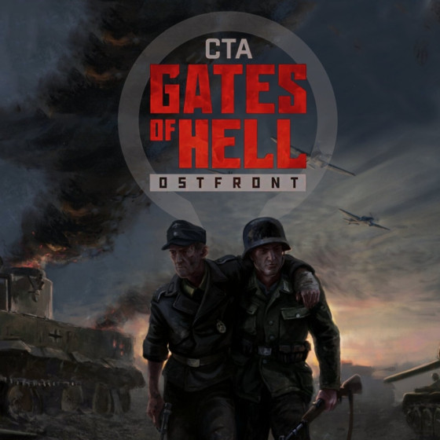
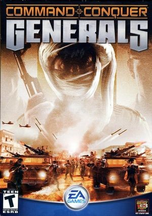

Hearts of Iron IV— відеогра в жанрі глобальної стратегії про Другу світову війну. Розроблена шведською компанією Paradox Development Studio. Гра стала сиквелом відеогри Hearts of Iron III. Гравцеві належить керувати однією з країн світу, розбудовуючи її інфраструктуру, досліджуючи нові технології, зміцнюючи збройні сили країни, вкладаючи нові договори з іншими країнами та багато чого іншого аби привести свою віртуальну націю до величі та перемоги. Однак гра має два головних мінуси:
1. Історичність подій, навіть якщо в грі вибрати історичний режим, ШІ не може досконало слідувати історичному контексту, тобто наприклад, якщо союзні війська висаджуються в нормандію і ви знищете їх багато мільйонну армію, цірати просто зарахуються в статистику, і трохи впаде підтримка війни у країн союзниць, однак в житті б це призвело до перелому та можливому миру.
2. В другій половині гри вже стає не цікаво грати, оскільки гравець починає в 1936 (або 1939), то в кінці 42-го року майже закінчується той самий "виклик", складність, твоя країна стає надто сильною, і це трохи розчаровує, бо в житті в цей час відбувалось дуже багато цікавих історичних подій.

Total War: Rome II - комп'ютерна стратегічна гра, розроблена британською командою Creative Assembly. Гра є сіквелом легендарної гри Rome: Total War, що вийшла в 2004 році. Якщо ви любите період античності, і навіть якщо не любите, ця гра має вам сподобатись. Епічні баталії з тисячами людей, якими керуєте саме ви. Добре пропрацьовані моделі усіх воїнів, кожен з яких займає своє місце в строю. Гра має гарну стратегічну карту з добре пропрацьованими фракціями та дипломатією, так і тактична карта на висоті, бої які там відбуваються захоплюють подих.

Call to Arms - Gates of Hell: Ostfront пропонує вибір різних ігрових форматів, таких як: Одиночна гра, Динамічна Кампанія, PvE, PvP та кооперативне проходження. З можливістю брати під контроль будь-який підвладний юніт кожен гравець зможе знайти щось своє. Миттєве перемикання видів від першої та третьої особи на всіх видах збройної техніки, вид від третьої особи або класичний стратегічний вид зверху доступний на будь-якому юніті; все є з першого запуску місії.

«У тилу ворога» заснована на унікальному поєднанні аркади, рольової гри та симулятора. Якщо класичні стратегії зазвичай ставлять на чільне місце геймплея безпосередньо бойову і, частково, економічну складову, то «У тилу ворога» вимагає від гравця акуратнішого і вдумливішого підходу, концентруючи його увагу не стільки на бою, скільки на розвідці та підготовці до зіткнення з противником.

Ведіть війну в реальному часі більш різноманітними способами, ніж будь-коли, завдяки арсеналу сучасності й найближчого майбутнього. Командуйте потужними збройними силами США, величезною китайською військовою машиною або винахідливою Світовою Армією Визволення